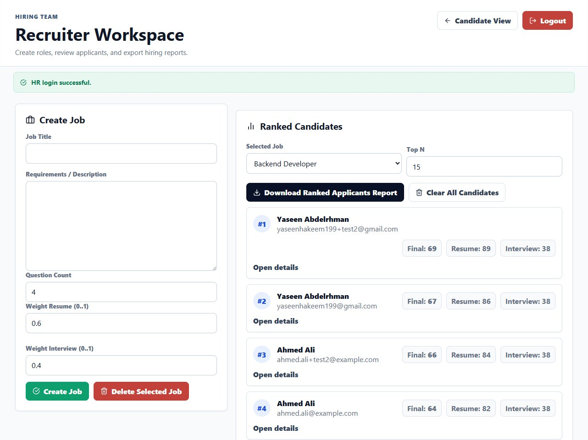
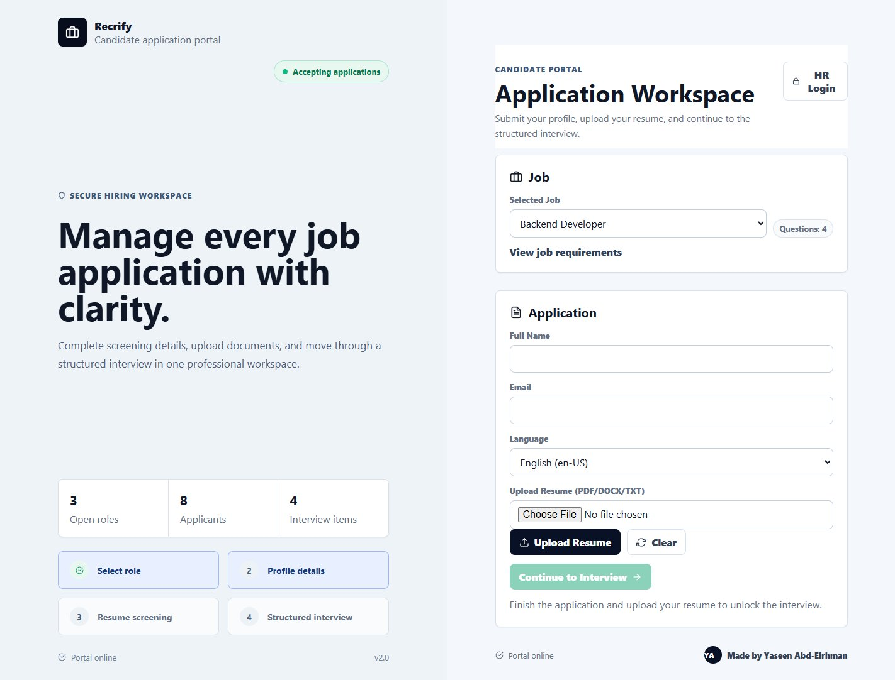

Graduation project, 2026
Recrify
An AI hiring tool that screens candidates for HR teams. It scores each resume against the job, interviews the candidate live, and ranks everyone by a weighted final score.
- LLM resume scoring through the Hugging Face API: match score, strengths, gaps and keywords
- Live interviews over WebSockets with text or voice answers and feedback on each answer
- HR dashboard with custom scoring weights, ranking and DOCX evaluation reports
- React
- FastAPI
- PostgreSQL
- WebSockets
- LLMs

